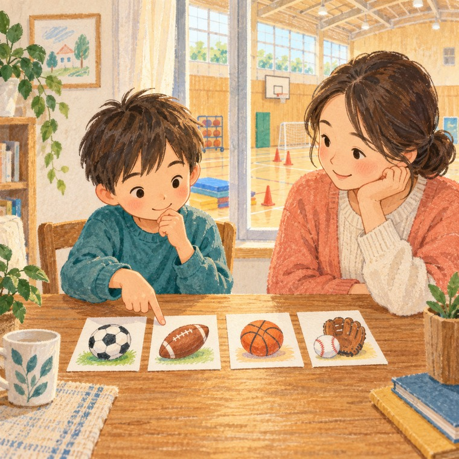
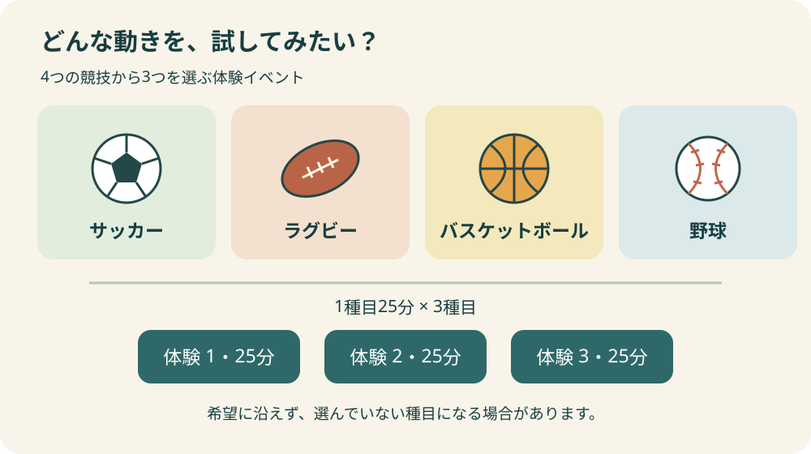
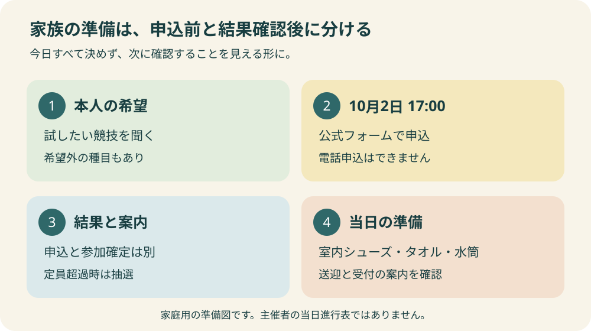

スポーツ・イベント
第2回いわたホームタウンスポーツフェスティバル｜申込

表紙はAIで作成したイメージイラストです。実際の参加者・会場を撮影したものではありません。
この記事の要点
Q. いつまでに、誰が申し込めますか。
A. 磐田市内の小学1〜4年生が対象で、申込は2026年10月2日17時までです。10月12日にアミューズ豊田で開催、無料100人、定員超過時は抽選。本人の希望種目と保護者の送迎を確認してから、公式フォームで申し込みます。
申し込む前に、子どもが試してみたい競技を聞く
「第2回いわたホームタウンスポーツフェスティバル」は、市内の小学1〜4年生が複数のスポーツを体験できる催しです。2026年10月12日、アミューズ豊田で開催されます。申込期限は10月2日17時。参加を考える家族は、まず本人に興味のある競技を聞き、保護者がその日の送迎を担えるか確かめるところから始めてください。
習い事を決めるためだけの一日と考えると、親も子も身構えてしまいます。私は、ボールの重さや動き方の違いを知り、「もう一度やりたい」「これは今日は難しかった」と自分の感想を持ち帰れる機会として受け止めたいと思います。体験後に入会先を決める予定まで組まなくても、参加する意味はあります。
公式案内にはスポーツの経験を問わないことが示されています。運動が得意な子だけに向けた募集ではありません。一方で、初めての場所や大人数の場が苦手な子もいます。親の「いい経験になるはず」という期待を先に置かず、本人が参加したいと思える説明をすることが、申込後の行き違いを減らします。
この記事では、市が公表した開催条件と、家庭で考えておきたい準備を分けて整理します。9月26日に公式情報を確認しました。受付開始時刻、抽選結果の通知方法、保護者の待機場所など、確認したページで分からない事項を推測で埋めることはせず、問い合わせる項目として残します。
開催要項を、家庭のカレンダーに移す
開催日は2026年10月12日（月曜日）、時間は9時30分から11時30分までです。会場はアミューズ豊田、対象は磐田市内の小学1年生から4年生。参加費は無料で、定員は100人、申込者が定員を超えた場合は抽選です。無料という条件と、申込後に参加が確定するかどうかは別に扱いましょう。
| 開催日時 | 2026年10月12日（月）9:30〜11:30 |
|---|---|
| 会場・対象 | アミューズ豊田／磐田市内の小学1〜4年生 |
| 参加費・人数 | 無料／100人、定員超過の場合は抽選 |
| 申込期限 | 2026年10月2日（金）17:00 |
| 申込方法 | 市公式ページの申込フォームまたはチラシの二次元コード。電話申込は不可 |
当日はサッカー、ラグビー、バスケットボール、野球の4種目から3種目を選び、1種目25分ずつ体験する内容です。希望に沿えず、選んでいない種目を体験する場合もあると案内されています。申し込むときに選んだ内容が、そのまま確定するとは説明しないほうが親切です。
市の案内には、ジュビロ磐田・静岡SSUボニータ、静岡ブルーレヴズ・アザレア、三遠ネオフェニックス、ハヤテベンチャーズ静岡の選手やスタッフから教わる内容が掲載されています。個別の選手名や参加人数はこの記事では保証しません。好きなチームとの接点を楽しみにしつつ、その競技自体を試す日にすると予定が変わっても受け止めやすくなります。
カレンダーには催しの2時間だけでなく、自宅からの往復と、帰宅後に落ち着く時間も入れてみてください。別の習い事や家族の予定をぎりぎりに重ねると、移動が急ぎ足になります。ここで必要なのは最短の行動計画ではなく、子どもが疲れたときにも予定を小さくできる余白です。

4種目の選択を、得意・不得意の判定にしない
種目を選ぶときは「どれが一番うまくできそうか」だけを尋ねる必要はありません。「ボールを蹴ってみたい」「投げてみたい」「テレビで見た競技を知りたい」といった、動きや興味から話を始められます。まだ名前をよく知らない競技があっても、それは参加しにくい理由ではなく、話をする入口になります。
親が経験した競技を勧めたくなる場面もあるでしょう。そのときは、まず本人の候補を聞いてから、自分の知っていることを短く伝える順番にします。子どもの答えを聞く前に長所を並べると、親が喜びそうな種目を選ぶことがあります。選択欄を埋める作業より、本人の言葉を聞く時間を先に取る提案です。
希望に沿わない組合せになる可能性も、申込時に伝えておきたい条件です。「好きな種目ができないかもしれない。それでも、ほかの種目も試してみたいかな」と尋ねれば、当日の落胆を見越して話ができます。別の種目にも関心があるのか、特定の競技以外は気が進まないのかで、参加の判断は変わって構いません。
25分は、長く一つの競技を続ける教室とは違う短い体験です。その場で上達の度合いを測ったり、向いている競技を決めたりするのは急ぎすぎだと私は考えます。初めて触る道具に慣れるだけで終わる時間があっても、「触ってみた」という経験を本人の感想と一緒に受け止めれば十分です。
申込と参加確定を分けて、締切までの段取りを作る
申込は公式ページからフォームへ進むか、チラシの二次元コードを利用します。電話での申込は受け付けていないため、問い合わせ先に電話をしただけでは応募になりません。操作が難しいときも、まず主催者に利用できる手段を相談し、電話で参加枠が確保されたと自己判断しないようにします。
締切は10月2日の17時です。「金曜日中」と覚えると夜でも間に合うと受け取りかねません。家庭の予定には日付と時刻を一緒に記入し、当日は送信内容を見直す余裕を残してください。兄弟姉妹で参加を考える場合も、学年などの対象条件を一人ずつ確認し、入力単位は実際のフォームの案内に従います。
送信後は、完了画面や届いた案内など、実際に表示された受付内容を家族で確認できる形で控えておくと便利です。ただし、この記事で特定の受付メールが必ず届くと約束するものではありません。画面が途中で止まったときは重複送信を繰り返す前に、表示された説明や問い合わせ先を確認するほうが状況を整理できます。
定員超過時には抽選があります。予定表には最初から「参加予定・結果待ち」と書いておくと、申込済みと参加確定を混同しにくくなります。抽選結果がいつ、どの方法で伝えられるかは、申込時の案内も確認してください。必要な説明が見つからない場合の問い合わせは、スポーツのまち推進課（0538-37-4832）です。
アミューズ豊田へ行く前に、場所と受付を分けて確認する
磐田市の施設ガイドで、アミューズ豊田の所在地は磐田市上新屋304と確認できます。地図アプリを使うなら施設名だけでなく住所も照合すると、初めて行く保護者にも共有しやすくなります。家族で送迎を分担するときは、行き先のリンクを一つ送り、別々の検索結果を見ていないか確かめておきましょう。
イベントの駐車場はアミューズ豊田と案内されています。ただし、施設全体の駐車台数と、当日にイベント参加者が使える空き区画は同じではありません。他の利用者もいると考え、到着直前に慌てない時間配分を家庭で決めます。どの入口から入るか、受付がどこかは、追加案内や当日の誘導に従ってください。
施設ガイドには一般・障害者用駐車場、バリアフリートイレ、車いすの貸出などの設備が掲載されています。配慮が必要な家族にとって調べる手がかりになりますが、設備があることだけで催しの参加方法まで分かるわけではありません。移動や待機に支援が必要な場合は、イベント側に具体的な事情を伝えて相談することを勧めます。
建物の一般利用時間や貸館の予約方法は、今回の集合時刻や申込方法とは別です。「体育館が開いているから早く受付できる」「施設予約をしたから応募できた」とは考えないでください。イベントに関する確認は主催担当へ、建物の設備について調べる際は市の施設ガイドへ、と入口を分けると話が進めやすくなります。
会場選びから普段の運動場所へ関心が広がった家族は、磐田市のスポーツ施設の選び方も参考になります。一回の体験と、日常的に通う施設では、必要な距離や予約条件が違います。今回参加できたからといって、同じ頻度や場所で続ける前提まで作る必要はありません。
持ち物は、子どもと一緒に一つの袋へ
公式に挙がっている持ち物は、運動ができる服装、室内シューズ、タオル、水筒です。服装を除いた三つを並べるだけでも、準備の見通しが立ちます。特に室内シューズは、いつもの外履きを持って出ればよいと思い込まないよう、前日に家族で確認しておきたい物です。
保護者が全部詰めてしまうと、子どもが袋の中を探せないことがあります。水筒はどこか、タオルはどこかを本人と一緒に見て、使った物を戻す場所も決めておくと、会場での小さな迷いが減ります。高価な道具を新しくそろえる話を先に進めず、公式案内にある準備から確かめれば十分です。
保護者の付き添い方や待機場所、きょうだいを連れて行ける範囲は、確認した開催ページでは細かく分かりません。乳幼児と同行する家庭や、途中で送迎担当が交代する家庭は、当日の現場で初めて相談するより、必要な条件を申込時の案内などで確認しておくと動きやすくなります。
ここで提案する家庭用メモは、「申込担当」「結果確認担当」「送迎担当」「持ち物」の四項目です。一人で担う家庭なら、誰に分けるかではなく、何をいつ確認するかを書けば使えます。家族の役割を細かく固定するためではなく、誰かが済ませたと思っていた作業を見つけるための短い記録です。

良い点——一回の申込で、違う動きに触れられる
私が良い点だと評価するのは、一つの競技をすでに選び終えた子だけでなく、まだ比べている子にも入口があることです。蹴る、投げる、持って動くといった違いを、話で聞くだけでなく自分の身体で知るきっかけになります。親が競技に詳しくなくても、選択肢を示せる催しです。
無料で参加できる点も、試す段階の家族には助けになります。ただ、家計への負担は参加費だけではありません。送迎にかかる時間、保護者の休み、きょうだいの予定も含めて参加しやすいかを見ると、「無料だから行くべきだ」という圧力を作らずに済みます。費用が低い機会ほど、本人の希望も同じ重さで扱いたいところです。
スポーツ経験を問わない募集は、最初の一歩を踏み出しやすくします。もっとも、会場では経験のある子も初めての子も一緒になる可能性があります。家庭では他の子と比べる予告をせず、「分からないことは係の人に聞けるといいね」と、困ったときの行動を一つだけ共有して送り出す提案です。
注文したい点——結果待ちと当日の見通しをつなげてほしい
案内に注文したい点は、申込後に家庭が何を待ち、どの時点で送迎を確定させればよいか、開催ページでも追いやすくしてほしいことです。締切と抽選の有無は分かりますが、確認した本文だけでは結果通知の時期や方法までは読み取れません。フォーム内などに案内がある場合も、最初のページから見通せると予定を立てやすくなります。
もう一つは、保護者の待機、受付場所、途中で体験を続けられなくなった場合の相談先です。これは現在の運営が対応していないと断定するものではありません。初参加の家庭が気にする点を、事前案内としてまとまって読めると安心につながる、という編集上の提案です。
希望外の種目になる可能性を明示していることは評価できます。そのうえで、組合せをいつ知るのか、子どもにどう伝えるとよいかの案内があると、希望と当日の体験をつなぎやすくなります。参加者全員の希望を保証することを求めるのではなく、変更を受け止めるための情報を先に届けてほしいと考えます。
対案・結論——申込前後に一枚ずつ、確認を小さく分ける
家庭向けの対案は、最初から完璧な準備表を作る代わりに、申込前と参加決定後の二回に分けることです。申込前は、対象学年、本人の気持ち、希望種目、送迎の見込み、締切を確認します。この段階で細かい当日の予定まで決め切らなくても、応募するかどうかは判断できます。
参加できることが分かってから、届いた案内で集合や受付、体験種目、付き添いの条件を確認し、室内シューズなどを準備します。二段階にすると、抽選結果を待つ間に不要な買い物をしたり、まだ公表されていない集合時刻を家族の確定予定に書いたりすることを避けやすくなります。
市への提案も、この二段階に合わせた案内です。募集ページには応募の判断に必要な条件を、参加者向け案内には移動・受付・持ち物・困ったときの窓口を集める形が考えられます。情報の量を増やすだけでなく、家庭がその時点で行う作業と並べることで、読み直す負担を減らせると思います。
抽選に外れたときや、本人が今回は参加しないと決めたときの週末も空白ではありません。磐田市ウォーキングマップを使ったコース選びや、近所の公園探しなど、予約のある催し以外の選択肢もあります。外出そのものを休む日があっても構いません。
大石の視点——本人が「また」を選べる終わり方に
私は、子どもの体験機会を評価するとき、参加者数だけでなく、帰宅後に本人がどんな言葉を持てるかを考えたいと思います。「楽しかった」だけでなく「思ったより難しかった」「別の競技も見たかった」も、その子の感想です。親が望んだ答えと違っていても、次の選択につながる材料になります。
帰り道は「どれを習いたい」と結論を迫るより、「どんな動きをした」「何が気になった」と聞くほうが話しやすい子もいるでしょう。疲れて話したくない様子なら、その日の評価を求めず翌日に回してもよいと考えます。一回の体験を習い事の契約へ直結させず、本人が考える時間を残す姿勢です。
またやりたいと言った場合も、すぐ道具を買いそろえる必要はありません。近くでどんな体験や活動があるかを調べ、家族の送迎や費用を並べてから次を選べます。地域にスポーツの入口が複数ある価値は、早く一つに絞るためではなく、その子の興味の変化に合わせて選び直せるところにあると私は見ています。
今日行うことは一つです。公式の募集ページを開き、10月2日17時の締切を家族の予定に置いたうえで、本人に参加してみたいか聞いてください。行きたいという答えなら希望種目と送迎を確かめ、今回は違うという答えならその気持ちも受け止める。子どもの選択を起点にすると、親の準備にも目的ができます。
よくある質問
初めてでも参加できますか。
公式案内ではスポーツの経験を問いません。対象は磐田市内の小学1〜4年生です。競技経験がないことだけで諦める必要はありませんが、個別の配慮や参加方法について確認したい場合は、申込前に主催担当へ相談してください。
申込順に100人が参加できるのですか。
定員は100人で、申込者が定員を超えた場合は抽選です。申込期限は2026年10月2日17時。申込を済ませたことと参加確定を分け、結果や当日の案内を確認してから最終的な準備を進めてください。
好きな3種目を必ず体験できますか。
サッカー、ラグビー、バスケットボール、野球の4種目から3種目を選びますが、希望に沿えず選んでいない種目になる場合もあります。各種目の体験は25分です。その条件を子どもにも伝えてから申し込むと、当日の行き違いを減らせます。
参考にした公式情報
- 磐田市「第2回いわたホームタウンスポーツフェスティバル」（2026年9月26日確認）
- 磐田市「施設ガイド アミューズ豊田」（2026年9月26日確認）

最終確認日：2026-09-26 ／ 本記事は公表情報と執筆者の見解を分けて記載しています。制度・数値・公開状況は変更される場合があるため、最新情報は磐田市公式ページでご確認ください。